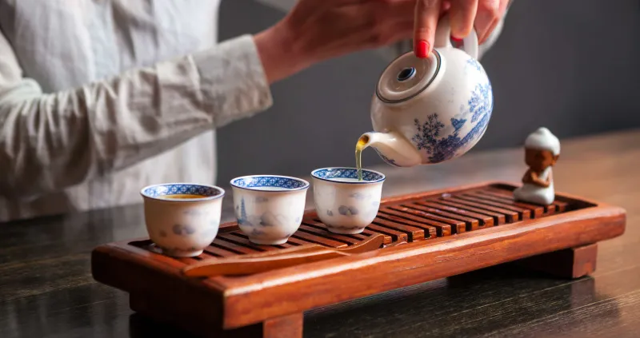
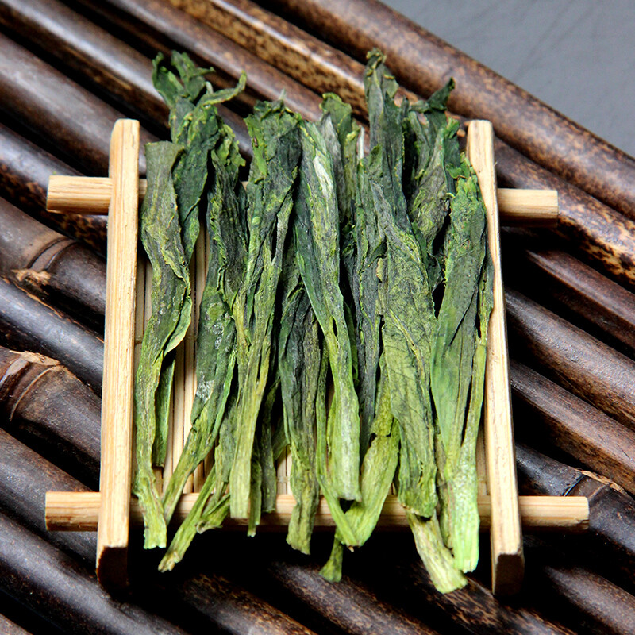
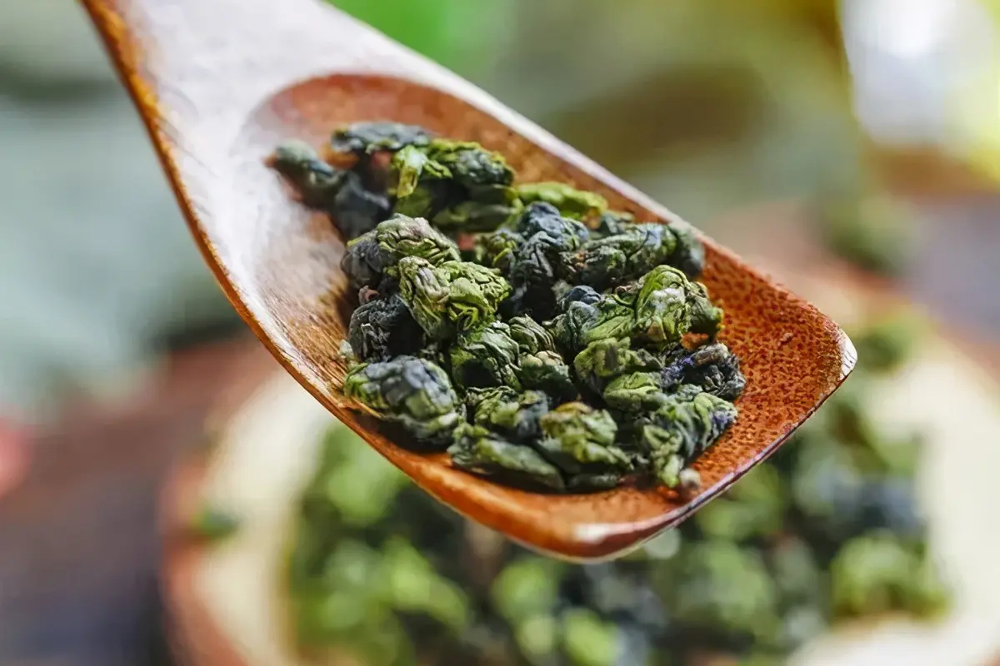
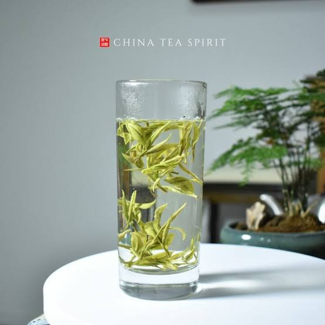
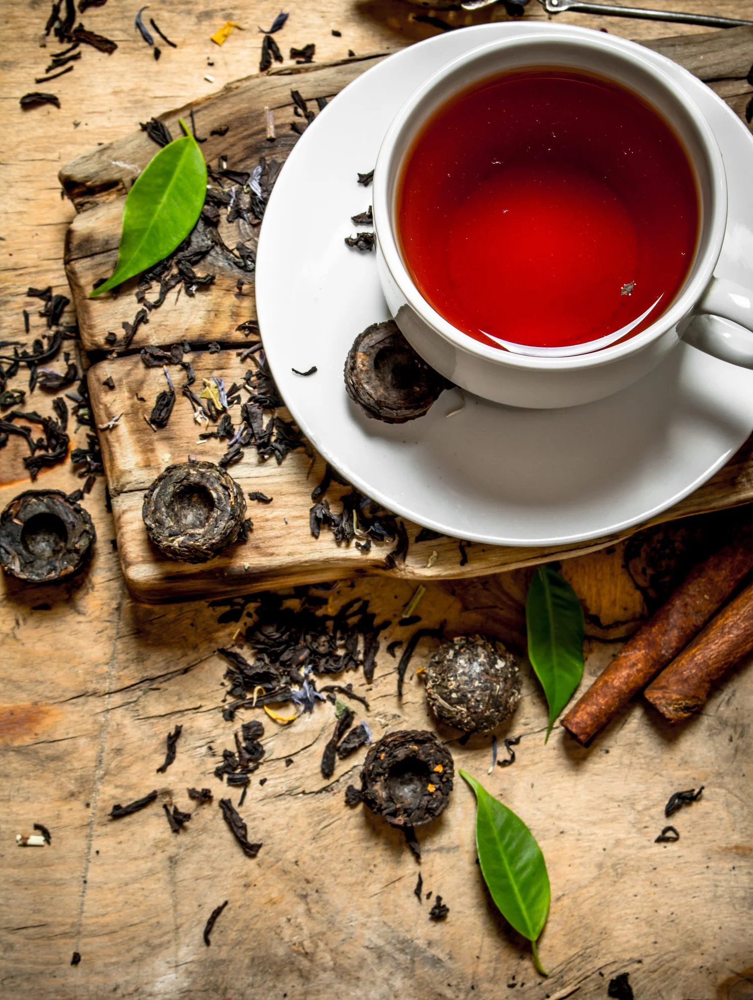

Tea Tastings
To truly taste tea is to slow down, breathe, and let the world wait for a moment.

More Than a Drink.
Chinese tea culture stretches back thousands of years — a tradition of seasonal rhythms, careful preparation, and the profound philosophy that slowing down is a form of wisdom. Our tea tasting gatherings are an invitation to rediscover that wisdom, one cup at a time.
We source teas with intention, brew each variety correctly, and share the stories behind the leaves. You don't need any experience — just a willingness to pause.

Taiping Houkui
A distinctive flat-leafed green tea from Anhui Province, recognizable by its long, slender shape and silvery appearance. Complex and slightly sweet with hints of chestnut and honey, it offers a smooth mouthfeel and a lingering floral finish — a tea that rewards patient appreciation.
Notes: Honey · Floral · Smooth

Tieguanyin (Iron Goddess)
A legendary oolong from Fujian, with a beautifully complex character — floral and orchid-like when lightly oxidised, roasted and warm when aged.
Notes: Orchid · Honey · Floral

Yellow Mountain Fur Peak
A premium green tea from the misty peaks of Yellow Mountain, with delicate downy buds that unfurl into tender leaves. Fresh and floral with a subtle chestnut sweetness, it captures the essence of high-altitude gardens — crisp, elegant, and refreshing.
Notes: Orchid · Floral · Fresh

Pu-erh (Aged)
Fermented and aged from Yunnan Province. Rich, earthy, and meditative — pu-erh is said to improve with age like fine wine, developing layers of complexity over years and decades.
Notes: Earth · Wood · Deep